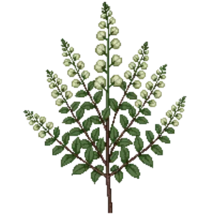

Birchleaf Spirea 'Tor'
Spiraea betulifolia 'Tor'

Birchleaf Spirea 'Tor' is a shrub for edging, suited to full sun to partial shade and clay or loam, flowering May, Jun.
| Type | Shrub |
|---|---|
| Mature height | 90 cm |
| Spread | 90 cm |
| Aspect | full sun to partial shade |
| Foliage | Deciduous |
| Hardiness | USDA 4a-8a |
| Pollinator-friendly | Yes |
| Pet-safe | Yes |
Where to use it in a border
At around 90 cm, it sits best along the front edge, where a low, spreading habit reads best. Give it about 90 cm of room to spread. It is hardy across USDA zones 4a to 8a, so check it suits your area before planting.
It appears in our lists of full sun, clay soil, pollinator-friendly plants, pet-safe plants.
Flowering through the year
Worth knowing
- Its flowers are valued by bees and other pollinators.
Good companions
Plants that share its conditions and style, chosen to complement its place in the border:
- Switchgrass 'Cloud Nine'for height behind it
- Switchgrass 'Dallas Blues'for height behind it
- Switchgrass 'Northwind'for height behind it
- Texas Sagefor height behind it
- Anna's Magic Ball Arborvitaeas a partner at the same level
- Arborvitae 'Hetz Midget'as a partner at the same level
Garden styles
Foundation planting Modern Native
See Birchleaf Spirea 'Tor' set in a full border, with spacing and companions worked out for your own conditions, in Border Builder.
Sources
Bloom timing and hardiness drawn from:
- NC State Extension (plants.ces.ncsu.edu, 2026-05)